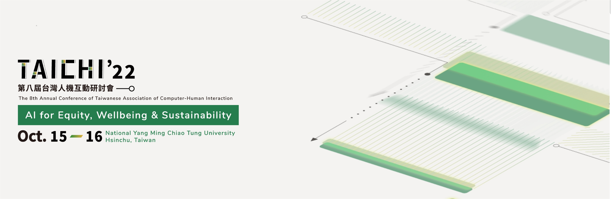
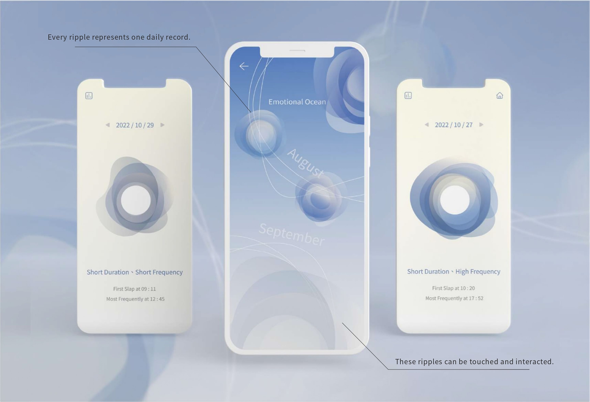

Client
TAICHI
Project
Research Project
My role
App Designer
Year
2022
Onedegree Insurance Product Page
Tags: IoT Product, App Design, Product Design, Product Research
The negative emotions generated by stress will make us unable to focus on important tasks. " Emotional Ocean" would transform the daily emotions of users into ripple graphics, which can help users realize the change of their mind.

SDGs-No.3
Mental Health Problem
The third of the UN Sustainable Development Goals is Good Health and Well-Being. How can we design to achieve this goal and help address the psychological stress of modern society?
Image Resource: downloaded from Pexels
Let’s take a quick look at the prototype!
The high-fidelity prototype which was produced in this project. It can interact with core functions and complete mission objectives.
Thanks for watching！
Going deep into the design behind it

Product Design-
Interactive Device
Through tapping and pressing such simple but repetitive movements, achieving the effect of pressure relief.
Operation Steps
1. Open the App on your personal mobile device and connect to the "Emotion Ocean" via Bluetooth.
2. Press/tap on the top of "Emotion Ocean" to create ripples.
3. Send data from "Emotion Ocean" to the App and record tapping frequency.
Summary & Reflection
Combining hardware interaction with software visualization, this project enables users to explore their mental state in diverse ways, easing hidden stress and anxiety in modern life. It was showcased at the 8th Taiwanese HCI Annual Conference and the 25th ACM CSCW.
 
Prev (P)
TU/e Master's Design Projects
Next (N)
TaoyuanGo App Redesign

© 2025 All rights Reserved. Design by Catherine Tsai